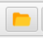
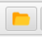
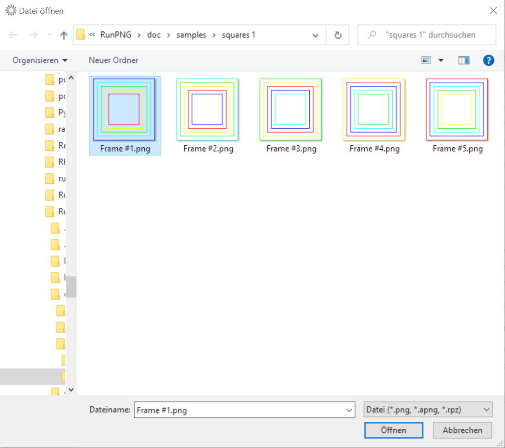
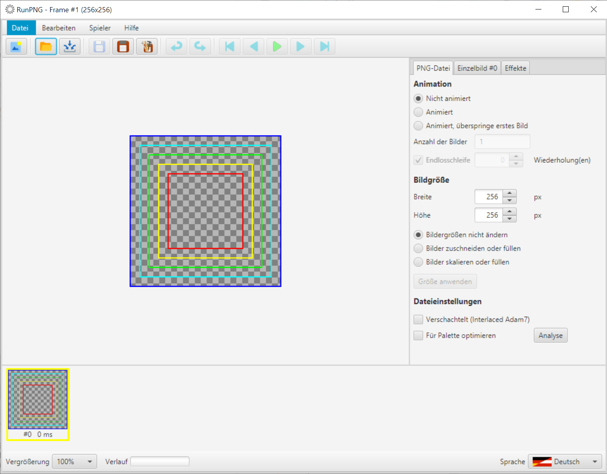
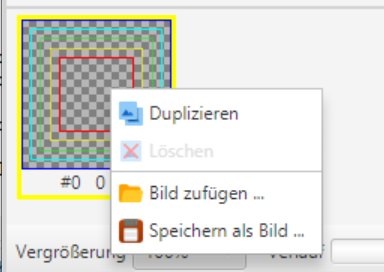
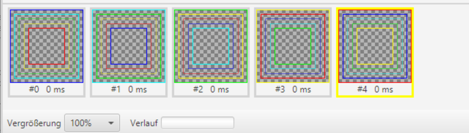
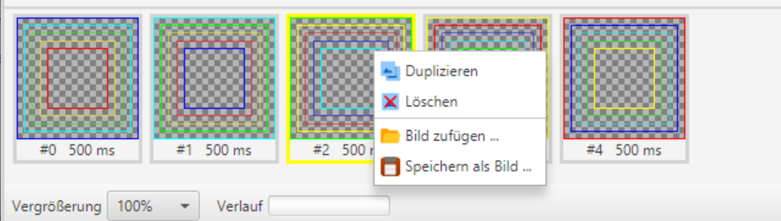
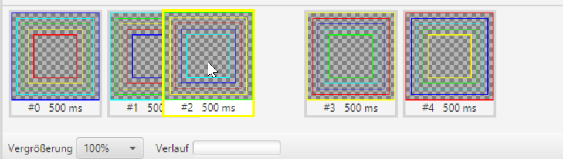

Einzelbildbehandlung
Einlesen von Einzelbildern
Eine Bildsequenz muss nicht in einem einzigen Vorgang eingelesen werden, sondern kann auch Bild für Bild zusammengestellt werden. Dafür befinden sich im Ordner RunPNG/doc/samples/squares 1/ einige bunte Quadrate zum Ausprobieren.
 
Zunächst starten wir RunPNG. Im Menü Datei befindet sich der Eintrag Öffnen .... Analog dazu lässt sich auch die dazu gehörige Schaltfläche in der Werkzeugleiste verwenden. Klickt man auf eines der beiden, zeigt sich ein Datei öffnen-Dialog.
Dieser Dialog lässt nur eine einfache Auswahl zu. Markieren wir mit der Maus das Bild Frame #1.png und klicken auf Öffnen dann lädt RunPNG das Bild in den Speicher.
Das erste Bild ist geladen. Es wird als selektiertes Bild angezeigt und gibt auch gleich die Applikationsgröße vor (siehe Titelzeile oben). Mit einem einzigen Bild lässt sich freilich keine sinnvolle Animation erzeugen. Also laden wir noch ein weiteres Bild hinzu indem wir mit der rechten Maustaste auf das Symbolbild in der unteren Bildleiste klicken.
Es erscheint ein Kontextmenü, das neben anderen Funktionen den Punkt Bild hinzufügen ... anbietet. Damit laden wir Frame #2.png hinzu. Das hinzugeladene Bild erscheint jeweils rechts von dem Bild, bei dem das Kontextmenü aufgerufen wurde. Ebenso verfahren wir mit Frame #3 bis #5. So lassen sich bequem auch Bilder aus anderen Ordnern heranholen.
Nun haben wir eine kleine Sequenz von fünf Bildern, die sich wie in Eine erste Animation beschrieben animieren lässt. Als Verzögerungszeit empfiehlt sich hier 500 ms oder länger, sonst wird das zu flimmerig.
Duplizieren, speichern und löschen von Einzelbildern

Mithilfe des Kontextmenüs lassen sich Einzelbilder auch duplizieren, speichern oder löschen. Einfach einen Rechtsklick auf dem betreffenden Bild machen und die gewünschte Funktion im Kontextmenü wählen.
Hinweis: Wenn nur noch ein Bild in der Leiste ist kann man es mit dem Kontextmenü nicht löschen.
Bildreihenfolge

Die Reihenfolge der Einzelbilder lässt sich ändern indem man ein Bild anklickt und es mit gedrückter Maustaste nach links oder rechts verschiebt. Nicht von den Indizes verwirren lassen. Die Bildleiste renummeriert die Einzelbilder sofort nach dem Loslassen der Maustaste.